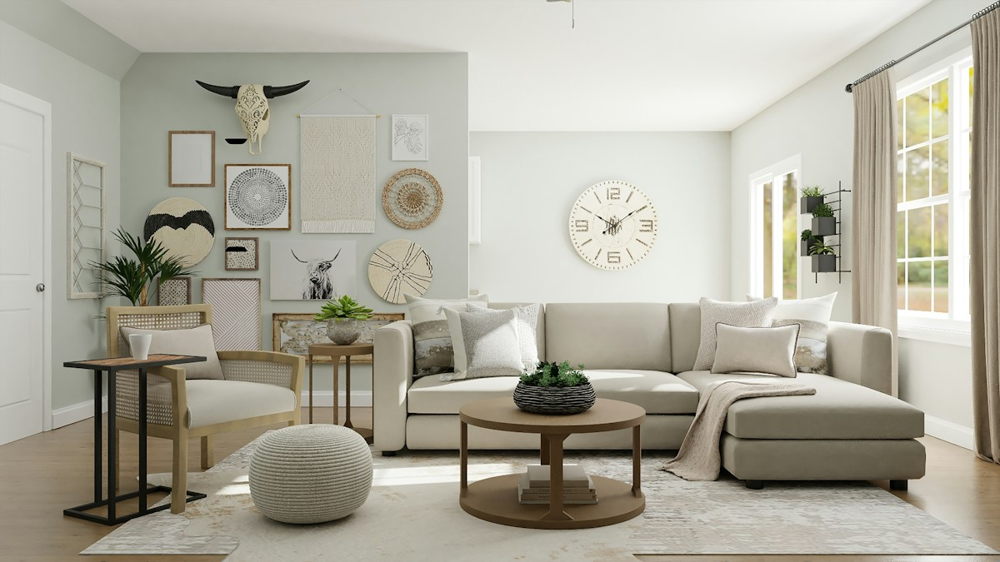

Furniture Website
Online store with shop, product, category, cart, gallery, about, and contact pages.
Selected work
Websites built for retail, healthcare, education, and beauty businesses.
Project overview
Each project links to its GitHub repository. The photos are representative images rather than screenshots of the finished websites.

Online store with shop, product, category, cart, gallery, about, and contact pages.
Multi-page healthcare website helping patients find the hospital and explore its services.
Multi-page hospital website presenting the hospital and its services.
School website giving parents and students a clear online view of the school.

Beauty salon website presenting services and contact information.
What makes a useful case study
A repository shows code; a short project story helps explain the decisions behind it.
Describe the audience and the problem the website is intended to address.
Be clear about which parts you designed, developed, or contributed to as a team member.
Name the technologies used and explain one or two important design or implementation decisions.
Link to a live version if available, and share verified outcomes rather than estimated metrics.